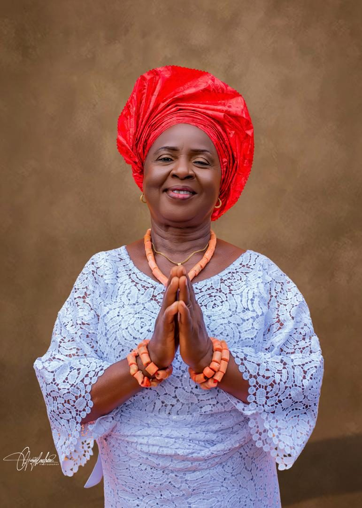
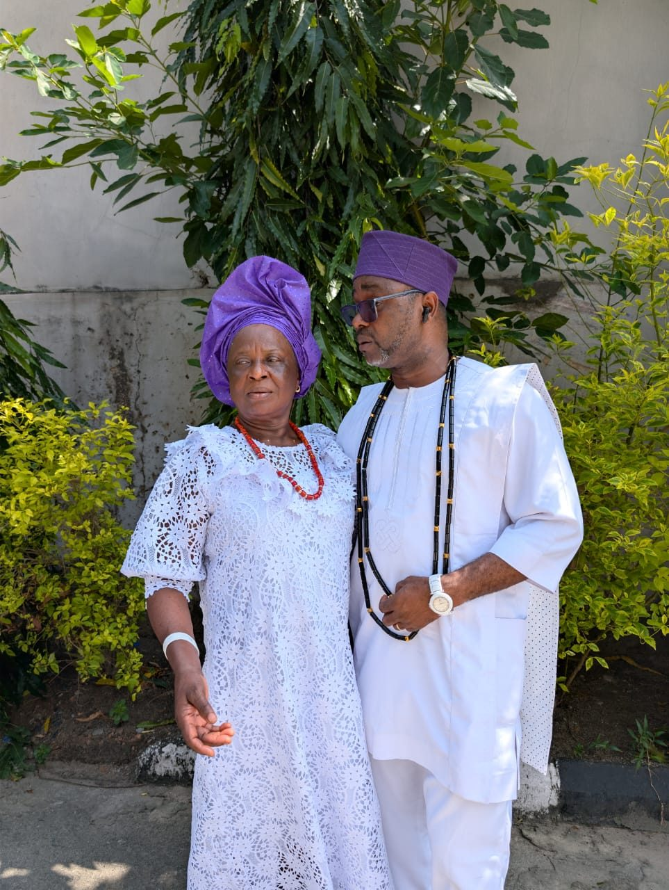
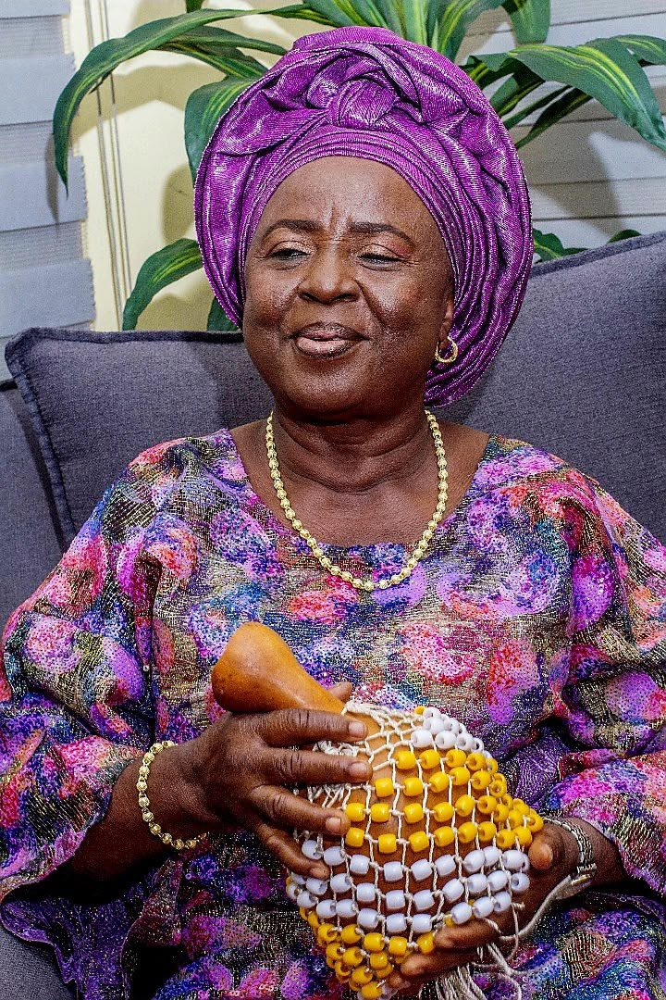
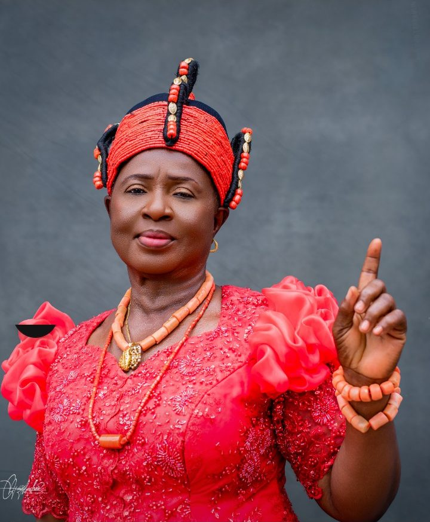
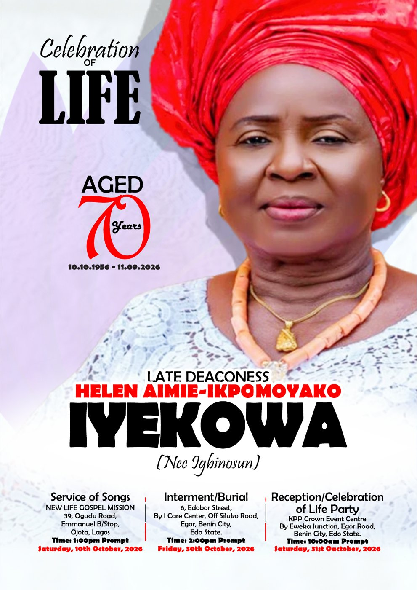

Service of Songs
Saturday, 10 October 2026 · 1:00pm prompt
New Life Gospel Mission, 39 Ogudu Road, Emmanuel B/Stop, Ojota, Lagos

In loving memory
Late Deaconess (Mrs.) Helen Aimie-Ikpomoyako Iyekowa(Née Igbinosun)
10 Oct 195611 Sept 2026
“Precious in the sight of the LORD is the death of His saints.” Psalm 116:15

Helen Aimie-Ikpomoyako Iyekowa was born on 10 October 1956 into the family of Chief Igbinosun Ayiyi and Mrs. Idahosa Igbinosun Ayiyi in Edo State, Nigeria. She was a daughter of the soil, raised in love, discipline and the fear of God.
She attended Iguedayi Primary School and, after the Civil War, St. Peter Anglican Primary School, Iyaro, Benin City, where she led a cultural troupe. From her early years she was known as a kind-hearted, respectful and hardworking young woman who carried grace and warmth everywhere she went.

In June 1977 she married her beloved husband, Mr. Paul Uriamose Iyekowa (Double Chief), and moved to Lagos. Their marriage was blessed with six biological children, five step-children, and many more who called her mother because of her accommodating heart. She was not just a mother to her own, but a mother to all.
She trained in fashion design at Anthonia Fashion Homes (OND, 1992–1994) and practised as a seamstress before founding her catering business, Unique Taste International, as MD/CEO. She catered for MTN Oregun, the RCCG Doctors’ Retreat, the FAAN Christian Fellowship, Stanbic IBTC Allen Branch, the New Life Gospel Mission Convention Committee (2005–2025), and countless weddings, birthdays and naming ceremonies within and outside Lagos.
Mummy was the true definition of a virtuous woman: caring, loving, selfless and ever ready to serve. Her doors were never shut, her pot was never empty, and her heart never tired of helping. She believed in unity, love and hard work, and instilled these values in all her children.
She transited to glory on 11 September 2026 at the age of 70, after a life well spent in service to God and humanity. She is survived by five siblings, six children, five step-children, a mate, sons- and daughters-in-law, grandchildren, and numerous adopted children, relatives and well-wishers.
The full family list is in the burial programme.
Saturday, 10 October 2026 · 1:00pm prompt
New Life Gospel Mission, 39 Ogudu Road, Emmanuel B/Stop, Ojota, Lagos
Friday, 30 October 2026 · 2:00pm prompt
6 Edobor Street, by I Care Center, off Siluko Road, Egor, Benin City, Edo State
Dress codeWhite T-shirt & jeans
Saturday, 31 October 2026 · 10:00am prompt
KPP Crown Event Centre, by Eweka Junction, Egor Road, Benin City, Edo State
Dress codeGreen with a touch of gold
Also on the family calendar

A deaconess who served God to her last days. Her children still hear her chant: “Thank you Jesus, Thank you Lord.”
Nobody left her home hungry. She never ate alone, and her door was open to everyone, without discrimination.
A trained fashion designer turned caterer, trusted by companies, churches and families across Lagos for two decades.
Six children, five step-children, a large family of grandchildren, and many more who called her Mummy and Grandma.
Seventy years of faith, family and service, from Edo State to Lagos and home to glory.
Born on 10 October to Chief and Mrs. Igbinosun Ayiyi
Married Mr. Paul Uriamose Iyekowa and built a home in Lagos
Transited to glory on 11 September, aged 70

Open the ProgrammeThe burial programme
Tap the cover to read the full programme: order of service, hymns, her biography and tributes from her children, grandchildren, siblings and friends.
Read by Pastor Dr. (Mrs.) Ajibolade Gladys
Her children and grandchildren wrote of her prayers, her cooking and her open home. Here are a few lines. Every tribute is in the programme.
Now showing · Helen Iyekowa
Two tribute films made by the family, and short clips of Mummy praying, dancing and rejoicing as everyone remembers her.
Moments with Mummy